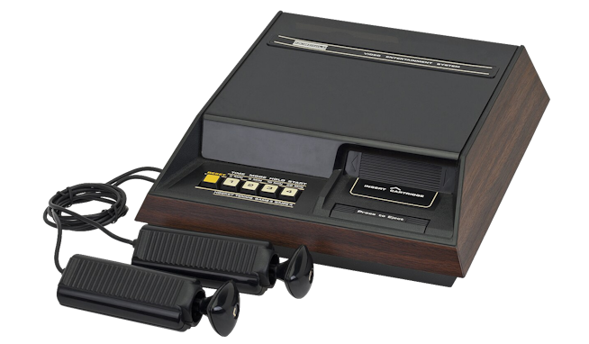

Fairchild Channel F
Lanzada en Norteamérica a finales de 1976, la Fairchild Channel F (originalmente
llamada Video Entertainment System o VES) fue la primera videoconsola de la historia
basada en cartuchos ROM intercambiables y equipada con un microprocesador (el chip Fairchild F8).
Hasta su llegada, las máquinas recreativas de hogar tenían juegos fijos impresos en sus circuitos.
Además de su innovación de software, destacó por sus curiosos mandos de tipo joystick de ocho direcciones
sin base fija. Aunque el posterior lanzamiento masivo de la Atari 2600 eclipsó su éxito comercial,
la Channel F ostenta un papel de absoluta vanguardia técnica en la industria del videojuego.
